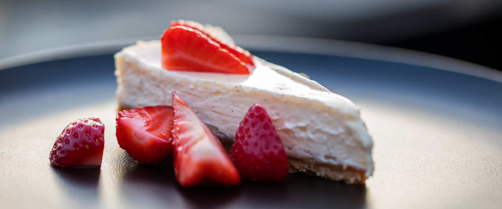

Cheesecake
2 Stunden
Leicht
11.03.2025
2 Stunden
Leicht
11.03.2025
Zutaten für
200 g Vollkornkekse
125 g weiche Butter
2 Äpfel
3 Eier
220 g Zucker
1 PICKERD Grand Bourbon Vanille-Schote oder PICKERD Vanille-Schote
1 kg Quark
250 ml Sahne
250 ml Milch
2 Pck Vanillepuddingpulver
Gesamt ca. 2 Stunden
Die Vollkornkekse fein zerbröseln, 125 g Butter schmelzen, Kekse dazugeben, mit der Masse den Boden einer Springform (Ø 28 cm) auslegen und andrücken. Äpfel schälen, in Spalten schneiden und auf dem Boden verteilen. Die Eier und 220 g Zucker dickschaumig aufschlagen. Vanillemark, Quark, Sahne, Milch und Vanillepuddingpulver verquirlen, unter die Eiercreme ziehen und auf die Äpfel geben. Cheesecake im vorgeheizten Backofen bei 160 °C (Gas: Stufe 2, Umluft 140 °C) ca. 30 Minuten goldbraun backen. Den Kuchen mit restlichem Zucker und gehobelten Mandeln bestreuen, restliche Butter in Flöckchen darauf verteilen, die Temperatur auf 180 °C hochschalten und weitere ca. 30 Minuten backen. Cheesecake erst in der Form und dann auf einem Kuchengitter auskühlen lassen. Mit Karamellsoße den Kuchen damit verzieren.

Raffael